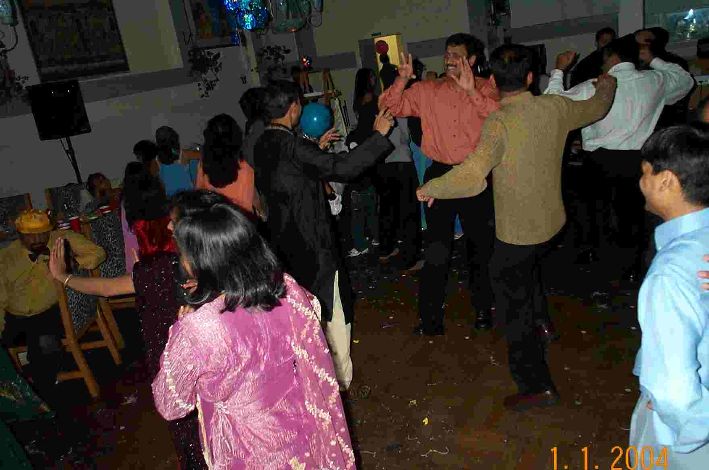
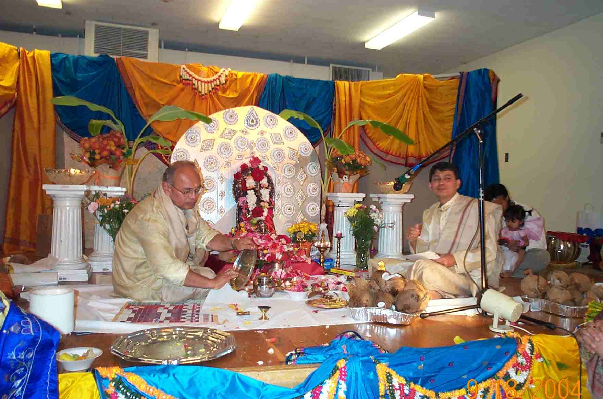
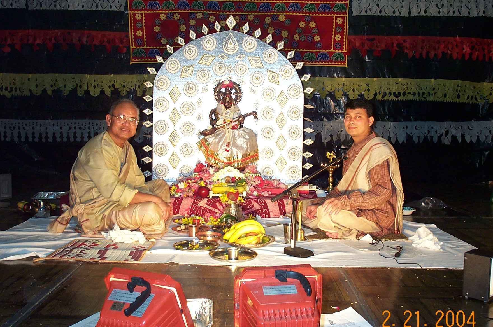
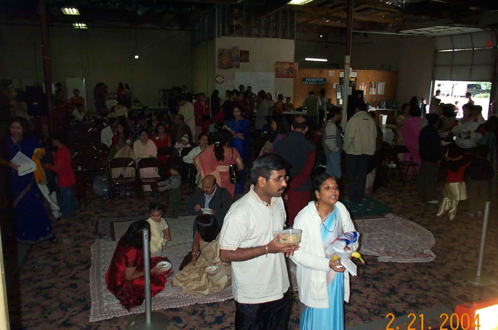
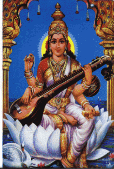

Ratha Jathra among Oriyas' of Bay
Area of California is the most important festival,
observed with great devotion and enthusiasm. In the year
2005 Ratha Jathra and Bahudra Jathra were held on 8th,
9th and 16th July 2005, respectably.
Construction of Ratha or chariot- A brand new
magnificent- looking chariot- was constructed in front
of the residence of Subhas and Mamata in Fremont by
skilled engineers like Sanjiv, Soma, Prasanna, Kashinath,
Tushar, Kamal, Sapan, Surya, Manoj, Subhas, and Mamata,
and many others with their family members. Sanjiv was
the chief architect of the entire construction work of
the chariot, which about 2 months. The 18-feet high,
huge chariot was looking gorgeous with red and yellow
silk cloth lining, studded with decorative colored
flowers and ribbons. While the chariot was under
construction many Indians, Americans, Chinese, and
people from other countries used to watch the
constructions with enthusiasm and inquiring about the
significance of Ratha Jathra.
The idols of Lord Jaganath, brother
Balabhadra, and sister Subhadra were worshiped in
Fremont Temple and Sunnyvale Temple on 8th July at 6pm.
The Ratha Jathra was completed at Sunnyvale Temple in
one day, and the festival in Fremont Temple lasted for
two days i.e. 8th and 9th July. Lord Jaganath,
Balabhadra and Subhadra were taken in procession called
Pahandibize to the decorated chariot standing
magnificently in front of the temple. After strong ropes
were tied to the chariot, the chariot was dragged by
100s of devotees, who were chanting the glories of Lord
Jaganath, Balabhadra and Subhadra and beating drums
ghanti and other instruments.
The Bahudra Jathra was performed on the 16th of July
2005 at 6pm in Fremont Temple. The idols of Lord
Jaganath, Balabhadra and Subhadra were worshipped inside
the temple and then taken into the procession to the
chariot (Pahandibize). After the idols were placed in
their respective seats in the chariot, the chariot was
pulled by the devotees in great enthusiasm by chanting
the glory of God. Besides the devotees of Orissa many
other people were involved in Ratha Jathra.
There are 2 albums - one contains the Hi-Res
pictures and the other
contains video of the celebrations. It contains Dr.
Mishraji's talk,
Shastriji's talk and the Rath Yatra celebrations. Do
Check them all out and
May Lord Jagannatha bless you all,
Link to the pictures:
http://imageevent.com/fremonttemple/rathyatra2005
Link to the Video Section of the Rath Yatra
http://imageevent.com/fremonttemple/rathyatra2005videos
In addition to these there are updated pictures of the
construction. Do
check them out too.
Link to the updated construction pictures
http://imageevent.com/fremonttemple/templeconstructionprogress/july92005
Jai Jagannatha Swami Ki....Jai
Dec 31st, 2004 (Castro Valley, CA) -- Bay Area New Year
Eve 2004
This Year party was undoubtedly the best New Year party
we have ever organized.
The party started appropriately with a moment of silence
for the tsunami victims. People had enough time of
silence to reflect on the horror of the tsunami and
praying for the dead and, resolving to help the tsunami
victims, every which way they can. Many companies are
matching contributions, people can contribute directly
to some of the well known relief agencies or contribute
through our own IASF (contact - Sudam Sahoo or Prasanna
Samantray.)
To herald the New Year, the organizers - Castro Valley,
Pleasant on etc. - had put a whole lot of effort to
create an ambiance of festivity, cheerfulness and hope.
Sanjib put a whole lot of personal equipment to use to
create such environment. It was incredible.
People got some noise makers and other goodies, right at
the time of registration, to herald the New Year with
fun and fare later in the night. Next, they got to
create a memento for the rest of their life by getting a
digital photo of their family. The appetizer included
Soup, Egg Rolls, Pakora etc. The idea of charging people
nominally for alcoholic drink was very appropriate -
people who don't drink didn't have to pay for
others....also, having people to pay for drinks limited
the amount of alcohol consumed...
Next, there were many dances, by our young ones in a
friendly competition, that were well choreographed to
Hindi pop music.
The dinner was a medley of diverse gastronomic
preferences to suit the mood of the crowd - Italian,
Chinese Mexican, and Indian. Some people stuck to the
purity of a particular type of cuisine while others
floated around like butterflies sampling from here and
there...
Next, people counted the seconds to the arrival of New
Year as the ball dropped in Madison Square that was
projected on a screen.
Rest was a blur! Everyone got into the act, dancing,
shouting, laughing, and repeating the refrain - "Happy
New Year." Everyone danced to the music and joined the
fun and frolic.
We didn't hear anyone who was not in praise for the
event and the hard work of the organizers...
However, there were some who were more grateful that
others - because they got a prize for one of the many
competitions - Best dancing group for kids (Sanuja &
Co), Second Best Dancing group for kids ( Erica & co),
Third Best Dancing Group for Kids (Soumya & co), Best
individual dance (Geetika), Best couple dance (Meera
nani & co), Best dressed family (Rudra Kar & family),
Best dressed person (Arundhati Mishara), and, Best
dressed youth (Ishita.)
It was a New Year to remember for a long time. This
year's organizers - Castro Valley, Pleasant on and
beyond did a superb job in uplifting the mood of
everyone. San Jose, Campbell, Almaden and Morgan Hill
are slated to organize the next year's New Year eve.
Good luck to them!!

Sept.
18th, 2004 (San Jose, CA) -- Bay Area Ganesh Puja 2004
This year, Manoj Sahu led us, the organizing committee to
a very successful Ganesh Puja. We were all awestruck by
the participation. Our thanks to everyone in the bay area
community, who became part of the puja event, in spite of
another engagement many people had already on their
calendars...
Personally, We were delighted to see the little kids sing
Bhajans in Oriya and Sanskrit. It takes a lot for the kids
to remember things in another language while being part of
a predominantly English speaking environment. We hope we
don't underestimate that.
The Giti Natya - Bhakta Prahallada - was really well
orchestrated. We were simply impressed by the kids
remembering so much of the dialogues while using some of
the arcane words of Oriya...The special effects by Tarun
was simply fantastic...
The crowd thinned down perceptibly toward the end when we
went for several bouts of Quiz. However, We could see the
intensity in the eyes of the diehards who remained
specificlly for the quiz. I'm simply impressed by the
knowledge of some of our very young kids. One of them is
very notable - Sarthak Sahu (son of Sambit Sahu) - is a
force to reckon with! He and his dad won the quiz contest
but most of the answers came from Sarthak....He should
become an inspiration to other kids...
Lastly, going on the stage to perform anything is really a
fight against one self (our self-consiousness about not
losing the perception others have about us) It was really
great to see Manoj Panda, Niranjan Tripathy, Sadasiva Sahu,
Priyadarshi, Rudra, Manoj Sahu, Suvendu, Sambit Sahu,
Chidananda Khatua, Amlan, kids and many more who
participated in the quiz and the audience who stayed to
end to answer the questions that were not answered by the
participants....It is not an easy thing to be on stage in
front of your family and friends and make mistakes. It
needs courage and guts....We salute the people who
particiapted in the quiz!
We had awards for everyone. However, it was too late and
we couldn't present the awards. Chitra Debnath spent a lot
of time purchainsg the awards. She and the organizing
comittee are going to make sure the awards are presented
to all the participants and winners...stay tuned.
We don't need to thank everyone because it is our event
and we are all part of it. However, I must let you know
that the people who came from southern California were
very impressed with the way we are able to function as a
team without any formal organization....we must take pride
in that!! Most of us have chosen to call what was a
foreign land to us when we came here, our home. We may not
realize it but, for our kids and future generations - this
is the Home. So, let's make sure we do everything to make
it easier and more friendly for them no matter where
they live in USA!!
Feb.
21st, 2003 (Sunnyvale, CA) --
This year's Saraswati Puja was notable for some key
improvements and changes - timeliness, decoration, audio
quality and the young emcees (Sunny and Atasi.) Many
attendees noted the improvement in quality of the
cultural programs - the dances performed by kids were
superb!

For the first time, at least in my recollection, the
Puja and Puspanjali started right on time and people
were actually paying attention to puja and participated
in Aarati, unlike the usual gossiping among people
during Puja. The decoration of the stage beat all
previous attempts. The timing of events adhered to
planned schedule and the two young emcees really got the
audience involved with the 'quiz' questions. The 'beauty
pagent for men' certainly got a few laughs and
'entertained' people thoroughly.
The award certificates were of professional quality.
The organizing team made sure they installed the best
equipment for audio. In spite of the poor accoustics of
the hall, we could hear clearly at the back of the hall.
Audio quality has been a problem ever since we started
having cultural programs during Puja. Thanks to the
organizing team for taking care of that. At least this
time people stopped gossiping amongst themselves during
the performances...

On the minus side, we had the Saraswati puja way after
the real Saraswati Puja day. This was primarily because
of lack of an available hall of right size with right
price and also, because this year Saraswati Puja was too
close to our New Year celebration. Organizers of the
next events - please note.
There are obviously many people to thank who took time
off to plan and execute this event, so all of us could
enjoy. Oury thanks to the organizing team and those who
volunteered to make this a success.
This was one well done event! It's going to be
challenging for the organizers of the next event, to say
the least
Dec.
31st, 2003 (San Jose, CA) --
We have been celebrating new year for more than 20 years,
but this one was the best", declared Anji Apa as the
concluding remarks at our new year party. It was wonderful
to hear this, at least for the organizers. However, the
organizers do not make the party, the participants make
the party a successful event. In fact, the restaurant
owner, who's a punjabi, is so impressed with the odia
people that he would
provide his restaurant to us, but not
to punjabi folks. Therefore, all the participants deserve
a pat on their back. You came and enjoyed the party and
showed what fine and classy people you are. Cheers and a
BIG Thank You to all of you!
This New Year party took place after a gap of a few years and we tried a new
format wherein we show up and enjoy thoroughly and then leave -- no cleanups
to do or no volunteers to draft for the cleanup. We also introduced a few
new entertainment segments, such as the musical extravaganza by the
O'Rhythmics Band, DJ and dance videos. The music band had woked the hardest
and they deserve big round of applause from everyone. We'd like to thank all
the singers and musicians including Binay, Anup, Tarun, Subrat, Prasad, Subhas,
Mowgli, Sunny and Niranjan. The songs and the music was wonderful and enjoyed
by everyone. We'd like to thank Mitrada for doing a great job as the MC of
this program.
During this new year party, the participants discovered that they could dance
with their favorite actors and actresses. While the participants danced on the
dancing floor, their stars danced only a few feet away. This was made
possible by the projection system of Sanjib. This seems to have added a new
dimension to the New Year Party. Our sincere thanks to Sanjib for arranging
the video show. Our new DJ, Sunny had an excellent collection of dance numbers
on his CD and everyone enjoyed dancing to his tunes. Good Job, Sunny!
We'd also like to thank Paul, the restaurant owner for providing us with such
yummy food and drinks. The Aloo Chop was specially prepared in the eastern
Indian style and lot of people liked it. The goat meat was procured from
Bangla Bazaar to ensure the highest quality and freshness. He was also
generous enough to declare the alcoholic drinks free after he arrived at the
party.
Finally, we'd like to thank all the organizers including Purna (our
quick-action-hero), Prafulla, Prasanna Bhaina and Kamal who woked diligently
to plan the event.
We apologize if we missed any names of people that worked towards the success
of this event.
Happy New Year to all of you and we hope 2004 brings joy, happiness and
prosperity to you and your family!

Feb.
15th, 2003 (Sunnyvale, CA) -- Bay area Odias
celebrated Saraswati Puja this year on Feb 15 (Saturday)
at Hindu Temple, Sunnyvale. More than 200 Odias
gathered at the Sunnyvale Temple to celebrate the
Puja that was meticulously organized by Castro Valley/Plesanton 'Saahi'.
This year,
the puja Pendal was on an elevated platform,
with a firm structure made of wood that boasted
a decorated gate with floodlights bringing out
the shine of the backstage and the copper idol
of Godess Saraswati seated with her fullest grandeur in
the hallow of a well decorated 'medha'. The whole
decor of the Pendal was very thoughtfully and creatively
done keeping the purity of white motif. Thanks to our own
Biswakarma, Sanjib Mohanty and the rest of the gang who,
we’re told, worked hard the previous night late into the
morning (about 3:00 AM) to put the finishing touches.
Yet, they looked so fresh throughout the day!
Was it the freshness of a desire to excel?
The organizers had kept all
the good traditions of last year - well organized registration
desk, name tags, mouth-watering lunch, snacks and hot tea,
tables covered with white sheets, arranged chairs and an
enjoyable cultural function ending with awards for the
participants. Yet, they had taken it to the next level
on each of these items. The food was cooked right there by
Raja Sweets and people satisfied their growing appetite
with extra helpings of food that was served hot.
They also introduced some new
traditions - Chuda Ghasa as part of prasad, Khadi Chuan
for toddlers, 'paana' after lunch, Puja program in a
leaflet handed out during registration, and a
professional quality decoration of the pendal !
The Puja was conducted with perfection and full
devotion by our own purohit Debendra babu. Sarat babu
and Biju Nani were our representatives for the Puja as 'Jajamana'.
The cultural function included bhajans, dances,
two quality plays by the kids and ended with Mukavinaya (Dumb Charade)
competition for adults (conducted by our ever enthusiastic
host Twisampati Mitra), while the audience enjoyed the
function munching on 'garam singadha'.
More Memorable Moments From
Past Events ............................